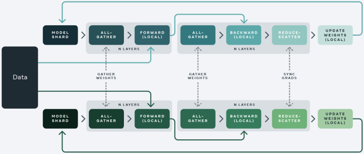

Workshop 2: Fine-Tuning with Axolotl
- Mastering LLMs Course Notes: My notes from the course Mastering LLMs: A Conference For Developers & Data Scientists by Hamel Husain and Dan Becker.
- Fine-Tuning Fundamentals
- Axolotl Framework for Fine-Tuning
- Honeycomb Case Study: Fine-tuning LLMs for Natural Language Querying
- Debugging Axolotl
- Scaling Model Training with More Compute
- Scaling Model Training with Accelerate
- DeepSpeed and FSDP Configurations in Axolotl
- Training on Modal
- Q&A Session
Fine-Tuning Fundamentals
Choosing the Right Base Model
- Two important factors to consider when selecting a base model are model size and model family.
Model Size
- 7 Billion vs. 13 Billion Parameter Models: 7 billion parameter models offer a good balance between performance and resource requirements for many use cases.
- Popularity and Practicality: 7 billion parameter base models are widely used for finetuning, evidenced by high download counts, suggesting a good starting point for most users.
- Consider Resource Constraints: Larger models (e.g., 70 billion parameters) require significant computational resources and may not be necessary for all applications.
Model Family
- Staying Current: Opt for recently released and well-regarded models (e.g., Llama3).
- Resources for Identifying Trends:
- Hugging Face Model Hub: Sort by “hotness” to find trending models.
- Local Llama Subreddit: The community actively discusses and evaluates various language models.
- Prioritize Experimentation: Trying out a few popular models and iterating based on results is more beneficial than overthinking initial model selection.
LoRA: Efficient Fine-tuning
- LoRA (Low-Rank Adaptation) is a technique for fine-tuning large language models by optimizing a smaller set of parameters, making the process more efficient.
How LoRA Works
- Simplified Model: Imagine a single layer in a language model as a matrix transforming a 4,000-dimensional input (text embedding) into a 4,000-dimensional output.
- Large Weight Matrix: This single layer involves a 4,000 x 4,000 weight matrix, amounting to 16 million weights, which is computationally expensive to fine-tune directly.
- LoRA’s Approach:
- Instead of adjusting the entire weight matrix, LoRA introduces two smaller matrices (4,000 x 16 and 16 x 4,000).
- Multiplying these matrices produces a 4,000 x 4,000 matrix, which is then added to the original weight matrix.
- Reduced Parameter Count: LoRA significantly decreases the number of trainable parameters to 128,000, requiring less RAM and making fine-tuning more manageable.
Benefits and Recommendations
- Efficiency: LoRA enables fine-tuning on less powerful hardware.
- Wide Adoption: It is the dominant fine-tuning method in practice.
- Practical Recommendation: Start with LoRA for most fine-tuning tasks.
QLoRA: Enhancing Efficiency with Quantization
- QLoRA builds upon LoRA by using quantization to further reduce memory requirements.
Quantization
- Bit Representation: Numbers in computers are stored using bits. More bits allow for finer numerical representation.
- QLoRA’s Quantization: Reduces the number of bits used to store the weights in the LoRA matrices (e.g., from 16 bits to 4 bits). This limits the possible values but significantly reduces memory usage.
- Potential Issue: Training with QLoRA involves quantizing weights, which introduces quantization errors. When these LoRAs are merged back into the original model, the resulting model differs slightly from the trained version.
- This discrepancy arises because the quantized weights are not identical to the original weights, leading to slight variations in the model’s behavior.
Practical Implications
- RAM Savings: QLoRA enables fine-tuning with even less RAM compared to standard LoRA.
- Minimal Performance Impact: While some accuracy trade-off is expected, the practical impact on results is often smaller than anticipated.
- Common Practice: Many practitioners use QLoRA as their default fine-tuning method due to its efficiency.
Importance of Data Quality
Data Improvement over Hyperparameter Tuning
- Many ML practitioners often prioritize hyperparameter optimization over data quality.
- The impact of improving data quality on model performance is significantly higher than that of hyperparameter tuning.
- Many successful LLM fine-tuners, like Teknium, creator of the Hermes models, prioritize high-quality data and data synthesis over deep mathematical understanding of the underlying transformer models.
- Fine-Tuning After Dataset Improvement
- Scenario: You’ve fine-tuned a model, then improved and expanded your dataset. Should you continue fine-tuning the existing model or start from scratch?
- Recommendation: Start fine-tuning from the base model again using the enhanced dataset.
Axolotl: Simplifying ML and Enabling Data Focus
- Axolotl abstracts away the complexities of transformers, enabling users to focus on data and model training without needing in-depth technical knowledge.
- Axolotl’s user-friendliness, enables a shift in focus from code debugging to data analysis.
- This ease of use allows for more experimentation and exploration of the data, leading to a better understanding of the problem and potentially better solutions.
Axolotl: Built-in Best Practices and Efficiency
- Axolotl comes with sensible default values and best practices, saving users time and effort.
- The speaker mentions “sample packing” as a specific example of a clever optimization feature within Axolotl that speeds up training.
- Users can leverage these pre-built optimizations instead of spending time figuring them out independently.
Axolotl Framework for Fine-Tuning
Overview
- Axolotl simplifies the process of fine-tuning LLMs by providing a user-friendly wrapper for lower-level Hugging Face libraries.
- Key Features:
- Examples: Provides numerous example configuration (YAML) files as starting points for different fine-tuning scenarios.
- Flexibility: Supports various data formats, training techniques (LoRA, QLoRA, DeepSpeed, FSDP), and integrations with tools like Weights & Biases.
- Ease of Use: Abstracts away many complexities, allowing users to focus on data and model experimentation.
Documentation
- GitHub Repository: https://github.com/OpenAccess-AI-Collective/axolotl.
- The README file contains most of the information needed to get started.
- Follow the Quickstart guide for step-by-step instructions on preprocessing, training, and testing a fine-tuned model.
- Documentation Site: https://openaccess-ai-collective.github.io/axolotl/
- Discord server: https://discord.gg/HhrNrHJPRb
Installation
Create a Python Environment
conda create --name axolotl-env python=3.11 -y
conda activate axolotl-envmamba create --name axolotl-env python=3.11 -y
mamba activate axolotl-envInstall Dependencies
pip install torch==2.3.0 torchvision==0.18.0 torchaudio==2.3.0 --index-url https://download.pytorch.org/whl/cu121
pip install packaging ninjaInstall Axolotl
git clone https://github.com/OpenAccess-AI-Collective/axolotl
cd axolotl
pip install -e '.[flash-attn,deepspeed]'Configuration Files
Define essential settings for training, including the base model, dataset, LoRA parameters, and more
Axolotl configurations are written in YAML and can be complex.
- Config options: A complete list of all configuration options.
Start with an example config file and modify it according to your specific needs.
- The “examples” directory in the repo is a good place to start.
- Copy an example and run it as-is before making modifications.
- Focus on changing the dataset initially, then explore other parameters as needed.
Leverage the Axolotl Discord channel for sharing and finding configurations.
Example: Fine-tuning a Mistral 7b model with QLORA.
- Specifies the base model, data set, storage location, and various hyperparameters.
- YAML Config
base_model: mistralai/Mistral-7B-v0.1 model_type: MistralForCausalLM tokenizer_type: LlamaTokenizer is_mistral_derived_model: true load_in_8bit: false load_in_4bit: true strict: false lora_fan_in_fan_out: false data_seed: 49 seed: 49 datasets: - path: _synth_data/alpaca_synth_queries_healed.jsonl type: sharegpt conversation: alpaca dataset_prepared_path: last_run_prepared val_set_size: 0.1 output_dir: ./qlora-alpaca-out hub_model_id: hamel/hc-mistral-alpaca adapter: qlora lora_model_dir: sequence_len: 896 sample_packing: false pad_to_sequence_len: true lora_r: 32 lora_alpha: 16 lora_dropout: 0.05 lora_target_linear: true lora_fan_in_fan_out: lora_target_modules: - gate_proj - down_proj - up_proj - q_proj - v_proj - k_proj - o_proj wandb_project: hc-axolotl-mistral wandb_entity: hamelsmu gradient_accumulation_steps: 4 micro_batch_size: 16 eval_batch_size: 16 num_epochs: 3 optimizer: adamw_bnb_8bit lr_scheduler: cosine learning_rate: 0.0002 max_grad_norm: 1.0 adam_beta2: 0.95 adam_epsilon: 0.00001 save_total_limit: 12 train_on_inputs: false group_by_length: false bf16: true fp16: false tf32: false gradient_checkpointing: true early_stopping_patience: resume_from_checkpoint: local_rank: logging_steps: 1 xformers_attention: flash_attention: true loss_watchdog_threshold: 5.0 loss_watchdog_patience: 3 warmup_steps: 20 evals_per_epoch: 4 eval_table_size: eval_table_max_new_tokens: 128 saves_per_epoch: 6 debug: weight_decay: 0.0 fsdp: fsdp_config: special_tokens: bos_token: "<s>" eos_token: "</s>" unk_token: "<unk>" save_safetensors: true
Datasets
Axolotl supports various data formats, including the common “alpaca” format.
Data format determines the structure of your training data.
- Alpaca Format
<start> Below is an instruction that describes a task, paired with an input that provides further context. Write a response that appropriately completes the request. ### Instruction: {instruction} ### Input: {input} ### Response: {output} <end>- Each sample contains an instruction, optional input, and desired response.
- The model is trained to predict the text following the “Response:” section.
Preprocessing Data
- Axolotl preprocesses data into a string format for training.
- The preprocessing step defines the template for formatting the input string.
- It’s crucial to understand the chosen data template (e.g., alpaca, chatML) and how it impacts model training.
Training
Axolotl uses a string and a mask for training.
- The mask prevents certain parts of the input from influencing the loss function.
- This ensures the model focuses on generating the desired output rather than replicating the entire input string.
- Use the “train on inputs” flag to modify this behavior.
- The mask prevents certain parts of the input from influencing the loss function.
The debug flag in the preprocessing step helps visualize the tokenization and masking process.
Monitor progress and metrics using tools like Weights & Biases.
Running Axolotl
The Quickstart section of the readme provides the necessary commands.
Three main steps:
Preprocess the data.
# preprocess datasets - optional but recommended CUDA_VISIBLE_DEVICES="" python -m axolotl.cli.preprocess examples/openllama-3b/lora.yml
Train the model.
# finetune lora accelerate launch -m axolotl.cli.train examples/openllama-3b/lora.yml
Test the model using the CLI tool or a lightweight Gradio app.
# inference accelerate launch -m axolotl.cli.inference examples/openllama-3b/lora.yml \ --lora_model_dir="./outputs/lora-out"# gradio accelerate launch -m axolotl.cli.inference examples/openllama-3b/lora.yml \ --lora_model_dir="./outputs/lora-out" --gradioThe Gradio app allows for easy testing and interaction with the trained model in a web browser.
- The Gradio app is for testing and not for production use.
Honeycomb Case Study: Fine-tuning LLMs for Natural Language Querying
- GitHub Repository: https://github.com/parlance-labs/ftcourse
- Finetuned Model: https://huggingface.co/parlance-labs/hc-mistral-alpaca
Introduction
- Honeycomb: An observability platform with a domain-specific query language (HQL).
- Goal: Reduce the burden of learning HQL by allowing users to input natural language queries.
- Approach: Fine-tune an LLM to translate natural language queries into HQL.
Initial Setup
- Prompt Design:
- System prompt introduces Honeycomb AI and its purpose.
- User schema (retrieved via RAG) provides context about the data.
- Fixed elements: Query specification (terse HQL guide), tips, and few-shot examples.
- Completion model completes user queries into HQL using the provided context.
- Limitations: Prompt engineering alone is insufficient for complex scenarios. Fine-tuning allows for tailored improvements.
- Initial Evaluation (Level 1: Unit Tests):
- Implemented unit tests with assertions to check query validity and correctness.
- Validations included: JSON validity, invalid columns, invalid filters.
- Iteratively refined assertions as new failure modes were discovered.
Data Acquisition and Preparation
- Challenge: Limited real-world data due to privacy concerns and new product launch.
- Solution: Generate synthetic data using LLMs:
- Prompt engineering: Instructed LLM to augment existing data by rewording queries, substituting columns, and modifying queries while maintaining valid structure.
- Utilized level 1 assertions to filter out nonsensical generated queries.
- Data Formatting:
- Prepared data in shared GPT-alpaca format for compatibility with Axolotl.
- Structured as conversations with system, human (input), and GPT (output) roles to align with Axolotl’s input handling and training objectives.
- Config Setup:
- Utilized Axolotl’s “sharegpt” and “alpaca” config for data format.
- sharegpt: conversations where
fromishuman/gpt.
- sharegpt: conversations where
- Set “train on inputs” to false to focus the model on generating correct HQL queries.
- Updated Weights & Biases and Hugging Face credentials for logging and model uploading.
- Utilized Axolotl’s “sharegpt” and “alpaca” config for data format.
Pre-Training Data Validation
- Importance: Verifying data preparation and identifying potential issues before training.
- Process:
- Executed
axolotl preprocessto flatten and assemble data into Axolotl’s expected format. - Manually inspected preprocessed data within the
last_run/prepareddirectory to ensure correct formatting and alignment with expectations. - Paid close attention to special tokens, spacing, and overall structure.
- Executed
- Tokenization:
- Investigated potential tokenization inconsistencies and their impact on model performance.
- Determined that minor inconsistencies, like extra spaces, didn’t significantly affect the final results as long as consistency was maintained during inference.
Training
- Base Model: Mistral 7b
- Training Setup:
- Referred to examples and community resources for initial Mistral configuration.
- Experimented with different learning rates, learning rate schedulers, and batch sizes to optimize performance.
- Tools:
- Used Accelerate for efficient training management and distribution (covered in more detail later).
- Integrated with Weights & Biases for logging training metrics and visualizing progress.
- Utilized Hugging Face to store and share the trained model.
- Results: Model trained successfully and uploaded to Hugging Face.
Sanity Checking and Evaluation
Blog Post: Your AI Product Needs Evals
Sanity Check:
- Pulled the trained model from Hugging Face.
- Designed a template to feed natural language queries and schemas to the model.
- Tested the model with sample inputs to verify basic functionality and output structure.
Level 1 Evaluation: Monitored level 1 evals (assertions) to track query correctness and identify failing assertions.
Level 2 Evaluation:
- Challenge: Level 1 evals passed, but model output quality wasn’t satisfactory. Synthetic data and model outputs required further refinement.
- Solution: Built an LLM-based query judge:
- Provided a prompt with instructions to act as a query evaluator.
- Included few-shot examples of queries with human-written critiques.
- Used a spreadsheet to gather critiques from Philip (domain expert) on model-generated queries.
- Aligned the LLM judge with Philip’s feedback by iteratively refining the prompt and examples.
- Outcome: The LLM judge provided valuable insights into model shortcomings and areas for data improvement.
Data Curation and Filtering
- Goal: Enhance the quality and diversity of the training data.
- Approaches:
- Fixing Bad Data: Used the LLM judge’s critiques to automatically improve flawed queries using an LLM.
- Filtering:
- Utilized level 1 and level 2 evals to filter out incorrect and low-quality queries.
- Implemented custom filters to remove low-complexity and overly complex queries.
- Applied deduplication techniques to remove redundant data points.
- Basic deduplication: Removed entries with identical natural language queries, schemas, or outputs.
- Semantic deduplication: Explored tools like Lilac for fuzzy concept search and clustering to identify semantically similar entries and maximize data diversity.
- Tools:
- lilac: A tool for exploration, curation and quality control of datasets for training, fine-tuning and monitoring LLMs
Iteration and Refinement
- The process of fine-tuning and evaluation was iterative.
- Continuously revisited and refined different stages, including:
- Updating level 1 and level 2 evals based on new insights and failure modes.
- Retraining the model with the curated and improved dataset.
- Re-evaluating the model using both automated and human-based methods.
Takeaways
This case study highlights the importance of a holistic approach to fine-tuning LLMs. It emphasizes the significance of: * Iterative development and evaluation. * Combining automated and human-in-the-loop techniques. * Building tools and processes that incorporate domain expertise. * Going beyond basic metrics and deeply analyzing data and model behavior to identify areas for improvement.
Debugging Axolotl
- Use the latest version of Axolotl: Ensure you’re using the most up-to-date version to avoid known issues.
- Eliminate concurrency:
- Use only one GPU.
- Use a single dataset process.
- This helps pinpoint the source of problems.
- Minimize iteration time:
- Use a small dataset for faster processing.
- Start with a small model for quicker training and testing.
- Clear caches:
- This is especially critical for debugging dataset formation issues.
- Cached data can lead to unexpected behavior and misinterpretations.
- Debugging Tools:
- Axolotl’s documentation provides detailed guidance on debugging techniques.
- Debugging How-To Guide: https://openaccess-ai-collective.github.io/axolotl/docs/debugging.html
- Consider using VS Code to connect to Docker containers for easier debugging.
- Axolotl’s documentation provides detailed guidance on debugging techniques.
Scaling Model Training with More Compute
- Source Slides: https://huggingface.co/spaces/muellerzr/llm-conf
Model GPU Usage
🤗 Model Memory Calculator: https://huggingface.co/spaces/hf-accelerate/model-memory-usage
Calculating memory requirements: To estimate GPU memory needed for training, consider:
- Each parameter uses 4 bytes.
- Backward pass needs ~2x the model size.
- Optimizer (e.g., Adam) needs ~4x the model size.
Example: BERT base (108 million parameters)
Full precision Training: ~1.6 GB
Mixed precision Training: ~1-2 GB (gradients in half precision)
dtype Model Gradients Backward pass Optimizer step Highest float32 413.18 MB 413.18 MB 826.36 MB 1.61 GB 1.61 GB float16 413.18 MB 619.77 MB 826.36 MB 826.36 MB 826.36 MB
Scaling challenges: LLMs like LLaMA 3 8B require significant VRAM
Full precision Training: ~112 GB
dtype Model Gradients Backward pass Optimizer step Highest float32 28.21 GB 28.21 GB 56.43 GB 112.84 GB 112.84 GB float16 28.21 GB 42.32 GB 56.43 GB 56.43 GB 56.43 GB
Distributed Training
- Single GPU: Simplest approach, limited by single GPU memory.
- Distributed Data Parallelism (DDP):
- Full model on each GPU.
- Data split across GPUs for faster processing.
- Limited by the memory capacity of a single GPU.
- Fully Sharded Data Parallelism (FSDP) & DeepSpeed:
- Model, optimizer states, and gradients sharded across GPUs.
- Enables training models larger than a single GPU’s memory.
Fully Sharded Data Parallelism


- Sharding strategies:
- Full Shard: Everything (optimizer state, gradients, parameters) is sharded.
- Shard Grad Op: Optimizer state and gradients sharded, model joined during backward pass.
- No Shard: Equivalent to DDP.
- Hybrid Shard: Similar to Full Shard, but keeps a full model copy on each multi-node for faster communication.
- Model splitting techniques:
- Transformer-based: Split at Transformer layer boundaries.
- Size-based: Split after a specified number of parameters.
- Offloading parameters:
- Offloads gradients and parameters to RAM when VRAM is insufficient.
- Significantly slower due to data transfer between CPU and GPU.
- 72 hrs on 2x4090s vs 1-2 hrs on 1xH100 for a full finetune of LLaMA 3 8B
Additional Considerations
- CPU RAM-efficient loading:
- Use
device='meta'to create a model skeleton without loading weights into memory. - Load weights only on one GPU and distribute to others when needed, saving CPU RAM.
- Use
- Sync Module States: Ensures consistent model states across GPUs, crucial for FSDP.
Scaling Model Training with Accelerate
- Source Slides: https://huggingface.co/spaces/muellerzr/llm-conf
Accelerate: The Foundation
- Many popular libraries, such as HuggingFace Transformers, Axolotl, FastAI, and more, are built upon Accelerate.
- Accelerate simplifies the complexities of distributed training, making it user-friendly.
Core Components of Accelerate
Accelerate consists of three primary frameworks:
- Command-Line Interface (CLI): Facilitates easy interaction and configuration, as showcased in Accelerate launch demonstrations.
- Training Library: This underlying engine powers distributed training, streamlining the process significantly.
- Big Model Inference: Designed for handling inference in large models.
Key Commands in Accelerate
accelerate config:- Configures the training environment.
- Integrates seamlessly with configurations used in tools like Accelerate launch, allowing for consistent settings across different stages.
accelerate estimate-memory:- Calculates and estimates memory requirements, particularly VRAM usage, which is crucial for efficient training.
accelerate launch:- Executes the training script.
Why Accelerate Matters: Simplifying Distributed Training
- Launching and managing distributed training can be complicated, often involving different commands and setups for PyTorch, DeepSpeed, and other tools.
- Accelerate simplifies this process. Running a basic Python script often lacks distributed training capabilities, especially distributed data parallelism.
- Example: Without Accelerate, you would need to use specific commands like
torchrunwith multiple arguments for running a script on two GPUs. accelerate launchstreamlines this process by handling the complexities and allowing users to specify the desired configuration without needing to remember numerous commands.
Configuration and Execution with Accelerate
- Accelerate employs config files (similar to Axolotl) to define training parameters.
- Example: A config file can specify using a local multi-GPU setup with BF16 mixed precision on eight GPUs.
- When using FSDP, the config file can explicitly define all FSDP parameters.
accelerate launchwill automatically utilize FSDP for training based on these settings. - For users of Axolotl or Transformers, these config files within Accelerate offer a straightforward way to manage training configurations.
Accelerate Internals: A Low-Level View
- While not essential for users primarily interacting with higher-level libraries like Axolotl or Transformers, understanding the inner workings of Accelerate can be beneficial.
- Device and Compute Agnostic: Accelerate is designed to function seamlessly across different operating systems (Mac, Windows) and hardware (CPUs, GPUs, TPUs).
- Minimal Intrusion and Complexity: The library aims to be minimally intrusive, requiring few code changes.
- Developers create an “accelerator” object that prepares the environment.
- Simply replacing the standard backward function with
accelerator.backwardsis often sufficient for integrating Accelerate.
Accelerate in Action: Data Sharding and Global Steps
- Data Sharding: Similar to FSDP, Accelerate handles data sharding, distributing data efficiently across multiple GPUs.
- Global Step: It maintains a global training step to ensure consistency across distributed training.
- Example: If training on eight GPUs with Accelerate, instead of a single GPU with a batch size of 16, each GPU would use a batch size of 2 (2 x 8 = 16).
- This global step management eliminates the need for manual adjustments to the learning rate or scheduler when scaling training across multiple GPUs, simplifying the process and ensuring comparable results.
Protecting Training from “Dumb Decisions”
Avoiding BF16/FP16 conversion of model weights: Converting weights leads to irreversible precision loss and negatively impacts fine-tuning.
Using
autocastfor Gradient Conversion:autocastpreserves weight precision by only converting gradients, leading to more stable training and better fine-tuning capabilities.Exploring 8-bit Training with Transformers Engine and MSAMP:
These technologies enable training with native 8-bit precision (not quantized versions), potentially offering significant speedups.
Converting the entire model to BF16 before using these technologies can lead to instability during training and suboptimal performance.
TransformerEngine: A library for accelerating Transformer models on NVIDIA GPUs, including using 8-bit floating point (FP8) precision on Hopper and Ada GPUs
- Utilizes
autocastfor computations, performing them in 8-bit instead of 16-bit.
- Utilizes
MS-AMP: Microsoft Automatic Mixed Precision Library
- Allows for further experimentation with 8-bit precision, even enabling optimizer states to be stored in 8-bit.
Optimization Level Computation (GEMM) Comm Weight Master Weight Weight Gradient Optimizer States FP16 AMP FP16 FP32 FP32 N/A FP32 FP32+FP32 Nvidia TE FP8 FP32 FP32 N/A FP32 FP32+FP32 MS-AMP O1 FP8 FP8 FP16 N/A FP8 FP32+FP32 MS-AMP O2 FP8 FP8 FP16 N/A FP8 FP8+FP16 MS-AMP O3 FP8 FP8 FP8 FP16 FP8 FP8+FP16
Experimentation is Key: It’s crucial to experiment with different precision levels (FP16, BF16, 8-bit) to find the optimal balance between memory savings and training stability.
DeepSpeed and FSDP
- Both tools offer comparable functionality and are largely interchangeable.
- Choosing between DeepSpeed and FSDP often comes down to personal preference - aligning with Microsoft’s ecosystem or staying within the native PyTorch framework.
Resources
DeepSpeed and FSDP Configurations in Axolotl
DeepSpeed and FSDP Equivalencies
- DeepSpeed 03 is now equivalent to FSDP. This means both offer similar functionalities for distributed training.
- Other DeepSpeed options (01, 02) are not directly equivalent to FSDP.
- FSDP offers greater customization by allowing users to specify which components are uploaded.
Axolotl Configuration
- Axolotl uses config files for multi-GPU training with DeepSpeed and FSDP. These configs streamline the setup process.
- Axolotl’s FSDP configs are designed to prevent mismatches with Accelerate configurations. This approach simplifies configuration and avoids common errors.
- Recommendation: Remove the Accelerate config file when using Axolotl’s FSDP configurations to prevent conflicts. Axolotl will handle the necessary Accelerate settings internally.
Using Configuration Files
- Axolotl provides pre-built config files for DeepSpeed (01, 02, 03, BF16) and FSDP. These offer a good starting point for most users.
- Start with a pre-built config and adjust as needed. Consult Zach’s presentations and documentation for advanced customization.
- Specify the desired config file within Axolotl’s main config file.
Clarifications and Tips
- DeepSpeed 03 (equivalent to FSDP) requires explicit BF16 specification in the config file. This differs from DeepSpeed 01/02 where ‘auto’ can be used.
- Set BF16 directly in the DeepSpeed 03 configuration file. Failure to do so may cause issues during trainer initialization.
- DeepSpeed 01 and 02 can leverage the ‘auto’ setting for BF16 and FP16. DeepSpeed handles the data type selection after the trainer loads.
Training on Modal
Modal: Cloud-Native Python Development
- Modal: Cloud platform simplifying Python code execution, offering a seamless local development experience in a remote environment.
- Website: https://modal.com/
- Documentation: https://modal.com/docs/examples
- Key Features:
- Local-like Remote Development: Mimics local development while leveraging remote resources.
- Massively Parallel: Easily parallelizes tasks like hyperparameter tuning, making it efficient for Axolotl.
Understanding Modal
- Explore the Documentation: Detailed Modal documentation is available; start with the “Getting Started” and “Web Endpoint” guides.
- Web Endpoint Tutorial: Highlights Modal’s real-time code update capabilities. Modify code and see the changes reflected in production instantly.
- Modal in Action: Demonstrated through building a transcript summarizer and integrating with tools like Weights & Biases and webhooks.
Axolotl and Modal Integration: llm-finetuning Repo
- GitHub Repository: https://github.com/modal-labs/llm-finetuning
- Purpose: Provides a workflow for fine-tuning Axolotl using Modal, abstracting some complexities.
- Key Points:
- Automatic LoRA Merging: By default, merges LoRA weights into the base model upon training completion (can be disabled).
- Data Flag: Requires a data flag for specifying the dataset; relying on the config file alone is insufficient.
- DeepSpeed Configuration: Sourced from the Axolotl repository.
Using the llm-finetuning Repository
- Follow the QuickStart guide in the README.
Code Structure
srcFolder: Contains Modal-specific code.training.py: Includes thetrainfunction that wraps the Axolotl CLI command.common.py: Handles environment setup, Docker container configuration, dependency installation, and secret management.
- Configuration Files:
- Demo Configuration: Designed for a small, overfitting training run for demonstration purposes. Remember that the data flag overrides the dataset specified in the configuration file.
- DeepSpeed Configuration: Mounted from the Axolotl repository.
Debugging Data Within Modal
- Inspecting Data: Crucial step before full-scale training.
- Procedure:
- Run
modal runwith the--preproc-onlyflag. - Retrieve the run tag from the logs.
- Access the last run prepared folder using the run tag.
- Analyze the data similarly to the Honeycomb example, ensuring the correct format.
- Run
Q&A Session
Model Size for Fine-Tuning
- Smaller isn’t always better: While smaller models (like 5.3B parameters) are available, a 7B model often provides a good balance between performance and computational cost. Smaller models may suffer from inferior reasoning abilities.
- Context matters: The ideal model size depends on the specific use case and available resources.
Adapter Configuration
- Rank and Alpha:
- Rank: Determines the size of the adapter layers. A good starting point is 32 or 16.
- Alpha: Typically set to 2x the rank.
- Experimentation is key: Finding the optimal adapter configuration requires experimentation with different values and evaluating the impact on downstream task accuracy.
- Resources:
- A blog post by Sebastian Roushka discusses grid search for adapter configuration.
- Jono Whittaker’s talk “Napkin Math for Fine-Tuning” provides insights into parameter selection.
Custom Evaluation During Fine-Tuning
- Current limitations: While desired, there is no streamlined way to run custom evaluations periodically during fine-tuning in Axolotl.
- Workarounds:
- Use the
eval_table_sizeandeval_max_tokenssettings in Axolotl to generate and log predictions from your test dataset at specific intervals. - Retrieve logged predictions from Weights & Biases and run custom evaluations externally.
- Use the
Axolotl vs. Lower-Level Libraries
- Axolotl Advantages:
- Simplifies the fine-tuning process by abstracting away complexities and gluing together different libraries (e.g., integrating QLoRA with FSDP).
- Rapidly incorporates new techniques and improvements from the fast-evolving LLM landscape.
- Lower-Level Library Advantages:
- Offer greater flexibility and control for advanced use cases.
- Enable functionalities not yet implemented in Axolotl, such as custom callbacks during training (e.g., manipulating data between batches).
Quantization Implications (4-bit vs. Higher Precision)
- Trade-offs:
- Benefits: Smaller model size, reduced RAM requirements, potentially faster inference.
- Drawbacks: Possible performance degradation, especially noticeable with 4-bit quantization.
- Recommendations:
- Always evaluate the performance impact of quantization on your specific task.
- 8-bit or 10-bit quantization generally offers a good balance between size reduction and performance.
- QLORA considerations:
- QLoRA is beneficial when GPU RAM is limited.
- Avoid using QLoRA if you have sufficient GPU RAM, as quantization/dequantization overhead can negate potential speed gains.
Deterministic Output Generation
- Inference vs. Training:
- Deterministic output generation involves selecting the most likely token at inference time, rather than randomly sampling from the probability distribution.
- Techniques:
- Greedy decoding: Selecting the most likely token at each step.
- Beam search: Exploring multiple probable decoding paths.
- Guided generation: Constraining token generation using grammars or rules to ensure specific output structures (e.g., JSON).
- Fine-tuning’s role:
- Fine-tuning can improve the model’s ability to learn desired syntax and structure, leading to more reliable deterministic outputs.
- However, heavily relying on guided generation might indicate a need for better fine-tuning.
Additional Notes
- Mac M-series GPUs: PyTorch is supported, but MLX is recommended for a better fine-tuning experience.
- Agentic LLM Applications: Most, if not all, real-world LLM applications involve function calls, making them “agentic.” Focus on thorough testing, including unit and integration tests, for function call workflows.
I’m Christian Mills, a deep learning consultant specializing in practical AI implementations. I help clients leverage cutting-edge AI technologies to solve real-world problems.
Interested in working together? Fill out my Quick AI Project Assessment form or learn more about me.